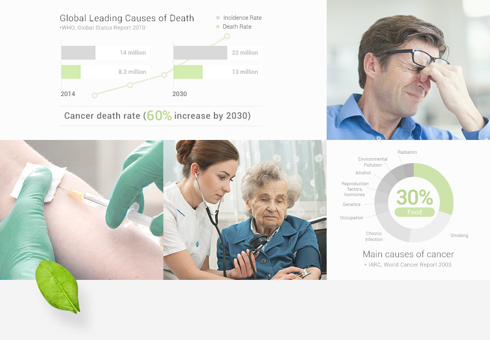
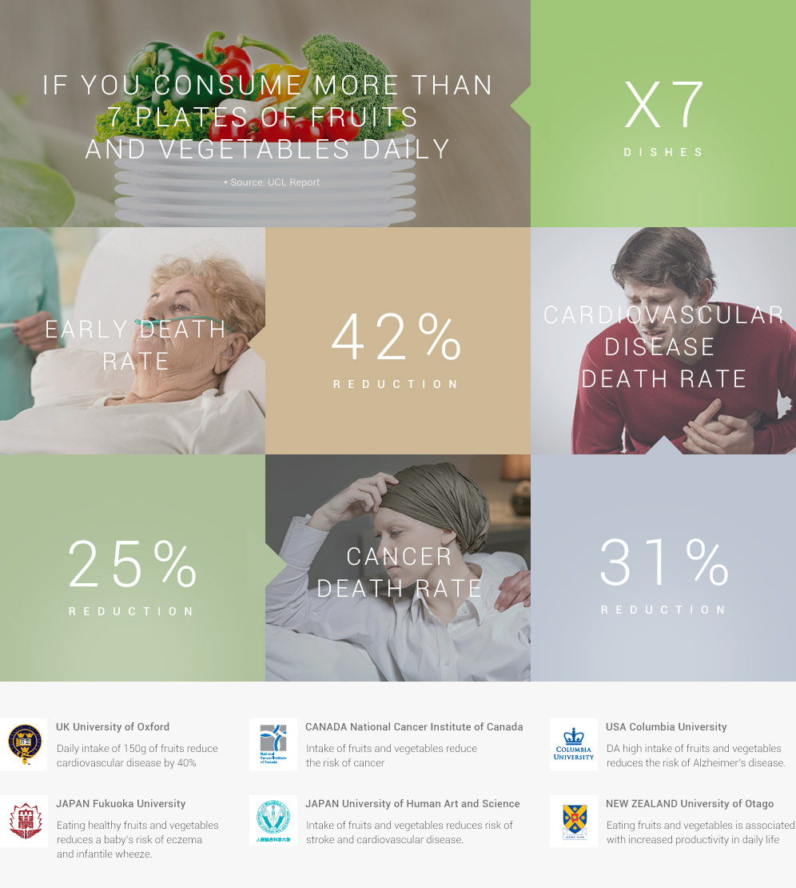
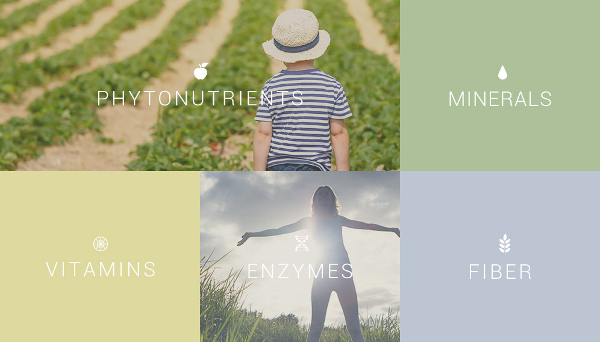
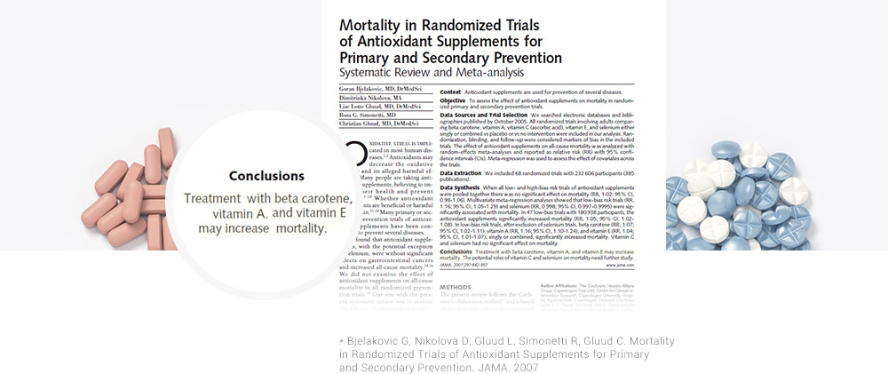
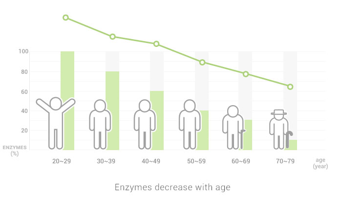
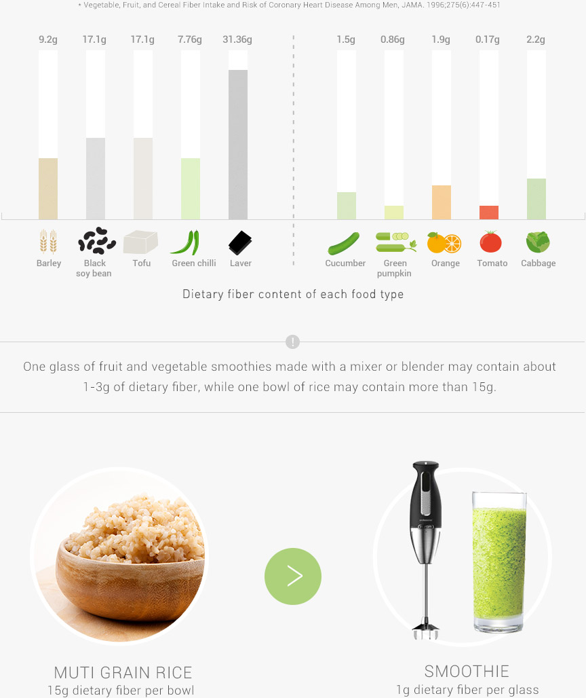
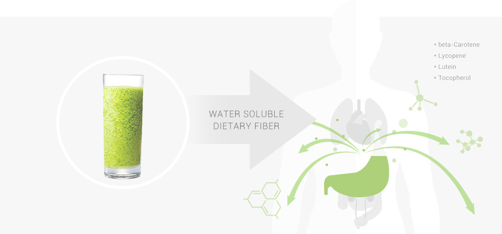

01
OUR EATING HABITS
ARE THE ROOT OF
SO MANY ILLS
Even with great progress in technology and healthcare,
we still suffer from disease and illness.

BAD EATING HABITS, TOO LITTLE EXERCISE, TOO MUCH STRESS
THEY ALL CONTRIBUTE TO OBESITY, WHICH THEN CAUSES DISEASE AND ILLNESS
The biggest cause of obesity is practicing the wrong eating habits.
Thankfully, nature can help.
02
FRUITS AND VEGETABLES
TO THE RESCUE!
THE ROAD TO BETTER HEALTH
Fruits and vegetables are not only abundant in vitamins, minerals, and dietary fiber,
but phytochemicals and enzymes as well.
According to a 13-year study by University College London, 60,000 people were monitored,
and a surprising result was announced:
If you eat a daily average of more than seven plates of fruits and vegetables,
you could drastically reduce the risk of all-cause mortality.
But consuming a sufficient amount of fruits and vegetables is not easy.

- UK University of Oxford
- Daily intake of 150g of fruits reduce cardiovascular disease by 40%
- CANADA National Cancer Institute of Canada
- Intake of fruits and vegetables reduce the risk of cancer
- USA Columbia University
- DA high intake of fruits and vegetables reduces the risk of Alzheimer's disease.
- JAPAN Fukuoka University
- Eating healthy fruits and vegetables reduces a baby's risk of eczema and infantile wheeze.
- JAPAN University of Human Art and Science
- Intake of fruits and vegetables reduces risk of stroke and cardiovascular disease.
- NEW ZEALAND University of Otago
- Eating fruits and vegetables is associated with increased productivity in daily life
03
A WORLDWIDE MOVEMENT
TO EAT MORE FRUITS AND VEGETABLES
Many nations have campaigns to promote fruits and vegetables as part of a healthy diet.
The world continually strives towards a healthier life based on
well-directed dietary habits and balanced nutrition.
GLOBAL CAMPAIGNS
FOR PROPER DIETARY HABITS
-
Republic of Korea
Family Health 365
3 times a day – 6 different
kinds of fruits and vegetables,
with 5 different colors -
USA
Strive for 5 cups
5 to 9 servings of fruits
and vegetables a day -
UK
Eat in Colour
The healthy eating campaign Eat
in Colour gets everyone to take a five
minute break at 11am on Thursday 1 October
2009 and eat a nutritious piece of
fruit or vegetables. -
Canada
Fruits and Vegitables
- Mix it up! 3 times a day – 6 different
kinds of fruits and vegetables,
with 5 different colors -
Japan
5 servings of fruits
and vegetables a day The 5 A DAY Association-Japan
recommends five servings totaling 200
grams of fruit and 350 grams
of vegetables. -
New Zealand
5 + a day
5+ A Day is a Charitable Trust
that encourages Kiwis
to eat five or more servings of colourful,
fresh fruits and vegetables every day
for health and vitality. -
Australia
2 - 5 servings of fruits
and vegetables a day Go for 2 & 5 encourages adults to eat
at least two servings of fruit
and five servings of vegetables a day. -
Hungary
3 servings of fruits
and vegetables a day 3 times a day – 6 different
kinds of fruits and vegetables,
with 5 different colors -
Poland
Fruits and vegetables
5 times a day Children should eat 400 g of
vegetables and fruit, divided into
5 portions, everyday. -
Denmark
6 servings of fruits
and vegetables a day The 6 a day is the ideal
consumption of 600 grams of fruits
and vegetables a day. -
Brazil
5 a day
"5 a day" reminds Brazilians
to eat at least 5 servings of fruits
and vegetables a day. -
Netherlands
2X2
Eat 2 ounces of vegetable
and 2 servings of fruit a day
04
WHY
FRUITS AND VEGETABLES?
Fruits and vegetables are abundant with natural substances that are good for us,
such as vitamins, minerals, fiber, phytonutrients, and enzymes.

05
FRUITS AND VEGETABLES
ARE RICH IN
PHYTONUTRIENTS
PHYTONUTRIENTS ARE PLANT NUTRIENTS FOUND ONLY
IN FRUITS AND VEGETABLES.
Similar to the white blood cells we find in the human body, phytonutrients are substances
that help plants defend themselves from external dangers, such as insects and microbes.
These substances are have powerful antioxidant effects such as anti-aging,
skin care, promoting immunity, and much more.
Phytonutrients can have different effects depending on the particular color of the fruit or vegetable.
Thus, eating a variety of colors, without heating or cooking the fruit or vegetable.
is essential for a balanced nutrient intake conducive to good health.
- YELLOW beta-Carotene(Orange) healthy skin, strengthen immune system
- PURPLE Anthocyanin(Grapes) healthy eyes, cardiovascular health
- WHITE Allicin(Cabbage) detoxification heallthy bones
- RED Lycopene(Tomatoes) anti-cancer properties, cardiovascular health
- GREEN Lutein(Kale & Celery) healthy blood, anti-fatigue
DO YOU TAKE VITAMINS?
As people tend to lead busy lives, they try and take the “fast and easy road”
in taking care of their health. This includes artificial nutrition in the form of vitamin supplements.
Currently there is controversy surrounding vitamins, and some studies
state taking vitamin supplements could actually increase mortality.
 Conclusions Treatment with beta carotene, vitamin A. and vitamin E may increase mortality. * Bjelakovic G, Nikolova D, Gluud L, Simonetti R, Gluud C. Mortality in Randomized Trials of Antioxidant Supplements for Primary and Secondary Prevention. JAMA. 2007
06
ALL ABOUT
ENZYMES
Enzymes are essential nutrients that help almost all the reactions that occur in our bodies.
Even speaking and thinking need the help of enzymes!
1. ENZYMES ARE NECESSARY TO SUSTAIN LIFE.
Enzymes are essential to creating energy in your body. If you lack enzymes, materials
in your body cannot be broken down into energy, making you more easily fatigued.
In contrast, if your body has sufficient enzymes to create energy from ingested food,
you can enjoy a vibrant, active life.
2. THE AMOUNT OF ENZYMES IN OUR BODIES DECREASE
AS WE GET OLDER AND MUST BE SUPPLEMENTED
THROUGH FOOD.
The amount of enzymes in our bodies gradually decreases with age and do not replace themselves.
Therefore, they must be supplemented by food.
The easiest way to intake the most enzymes is through fruits and vegetables.

3. RAW FRUITS AND VEGETABLES
CONTAIN THE MOST ENZYMES
Enzymes become damaged if they are heated above 40°C.
Take an unheated bean and a heated bean. Leave them to germinate,
and you will see that the heated bean will not change while the unheated bean will sprout.
Why?
Because there are still active enzymes in the unheated bean.
As such, cooked and heated foods already have a reduced amount of enzymes in them.
In order to consume active enzymes, we need to eat raw, fresh fruits and vegetables.
HEATED BEAN
WITH NO ENZYMES
The heated bean will not sprout
because the enzymes are destroyed
VS
LIVE ENZYMES IN
UNHEATED BEAN
The unheated bean will sprout
because the enzymes are alive.
07
ALL ABOUT
DIETARY FIBER
Dietary fiber refers to the part of cell walls in fruits, vegetables,
and grains that cannot be completely digested.
Dietary fiber does not contain energy or calories,
however it helps clean as it goes through the digestive system.
1. WE DRINK JUICE TO TAKE IN NUTRIENTS
SUCH AS VITAMINS, MINERALS,
AND PHYTONUTRIENTS
Within the three main food contributors to total fiber intake
(vegetable, fruit, and cereal), cereal fiber was most strongly associated with a reduced risk of total Ml.
(RR, 071; 95% CI, 0.55 to 0.91 for each 10-g increase in cereal fiber per day)
* Vegetable, Fruit, and Cereal Fiber Intake and Risk of Coronary Heart Disease Among Men, JAMA. 1996;275(6):447-451

One glass of fruit and vegetable smoothies made with a mixer or blender may contain about 1-3g of dietary fiber, while one bowl of rice may contain more than 15g.
MUTI GRAIN RICE 15g dietary fiber per bowl VS SMOOTHIE 1g dietary fiber per glass
2. WATER SOLUBLE DIETARY FIBER IN SMOOTHIES
ACTUALLY INTERFERES WITH NUTRIENT ABSORPTION
Smoothies contain water soluble dietary fiber, which reduces the absorption of nutrients
such as beta-carotene, lycopene, lutein, and tocopherol into the body.

08
JUICE FOR YOUR HEALTH
-
EASY
INTAKE With a glass of Hurom juice,
you can easily ingest more of the daily
recommended amount of 7 plates of
fruits and vegetables! -
HIGHER
ABSORPTION RATE Compared to eating fruits and vegetables,
drinking them in juice-form increases
the nutrient absorption rate by four times. -
EVEN SEEDS
AND PEELS Enjoy even more nutrition
in your fruit and vegetable juice,
by including the nutrients of seeds
and peels